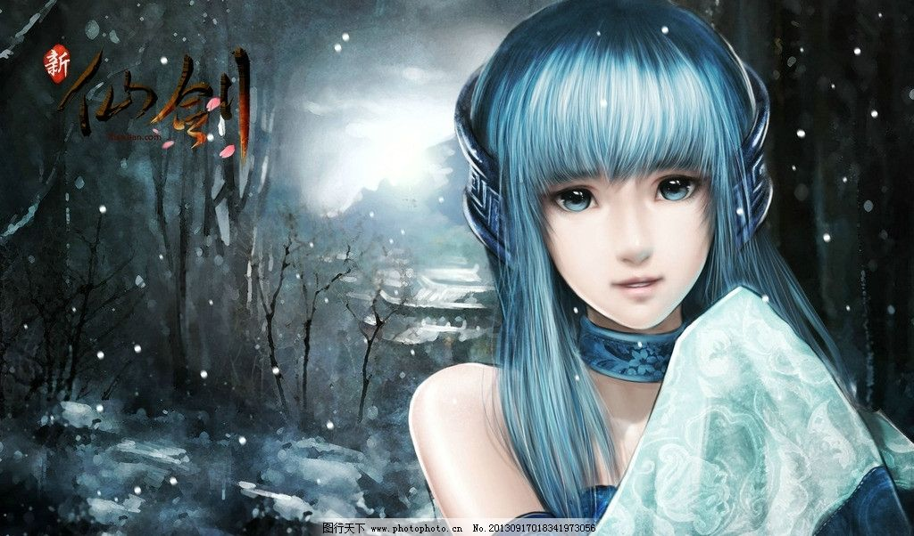
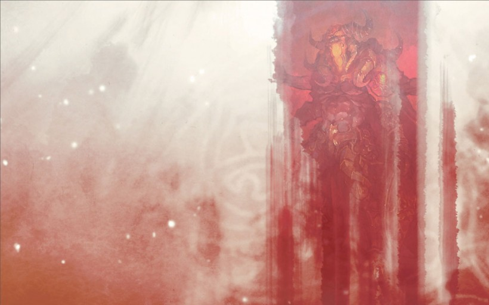

仙剑奇侠传

游戏介绍
《仙剑奇侠传4》的故事从小居住在黄山青鸾峰上、从未下山过的少年云天河开始，某日云天河遇到一名闯上山来寻找剑仙的少女韩菱纱。两人误打误撞之下闯入云天河父母的神秘墓室，并在无意间令墓室崩塌。因为害怕父亲的鬼魂前来找自己算帐，又想探察已故父母的过往，再加上对剑仙御剑之术的好奇，云天河跟随韩菱纱下山，踏上寻觅父母过往、求仙问道之路。 机缘巧合之下，云天河、韩菱纱结识了寿阳城的县令千金柳梦璃，并和昆仑弟子慕容紫英结为好友。在上天入地的求仙之旅中，云天河渐渐知晓了一件陈年旧事，并由此引出了重重疑云。自己的父母缘何隐居青鸾峰？父母的墓室中为何会有一层坚冰？高手，却为何从不向自己传授高深的武学？昆仑派为修仙不惜一切代价，其背后到底隐藏着怎样的秘密？ 随着那掩埋在岁月风沙之下的沉重往事日渐清晰，重重谜团终将完全解开，而迷途的终点，却又是另一场惊人的灾难与情劫……

游戏背景
书中仙曾言锁妖塔是五百八十四年前梁武帝所建，梁武帝生于公元464年，卒于549年，据此仙剑1应发生在1048（假设梁武帝生下来就喊着要建锁妖塔）至1133年（假设梁武帝快歇逼了嚷嚷着要建锁妖塔），如果靠前则是北宋，靠后则是南宋。
游戏系统
魔剑培养系统 2阵型系统 3战斗系统 4杀价系统
游戏测评
仙剑还是又打了一张保守的情怀牌。《仙剑奇侠传》这个名字，已在太阳君心底留下了灰色的一面。其实玩家们想要的也不是很多，有点诚意，有点新意也就够了，但这点似乎在《仙剑奇侠传移动版》里没有很好的实现，游戏多少还是差了点滋味。平心而论，这款移动版并不烂，但用着仙剑的IP，就不是那么让人觉得“好玩”了。